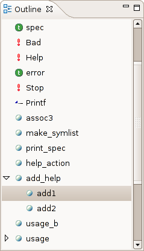

The outline is used to have an overview of all the definitions in the file currently edited, and to allow you to jump to a definition by clicking on it.

The outline synchronizes both ways: if you change the text caret position, the element selected in the outline will change too.
When you compile a file with the "-dtypes" option, the type of each element will also appear in the outline.
Note: if there are syntax errors in your code, the outline tries to display the elements that are valid, but in some cases it might not be able to do so.